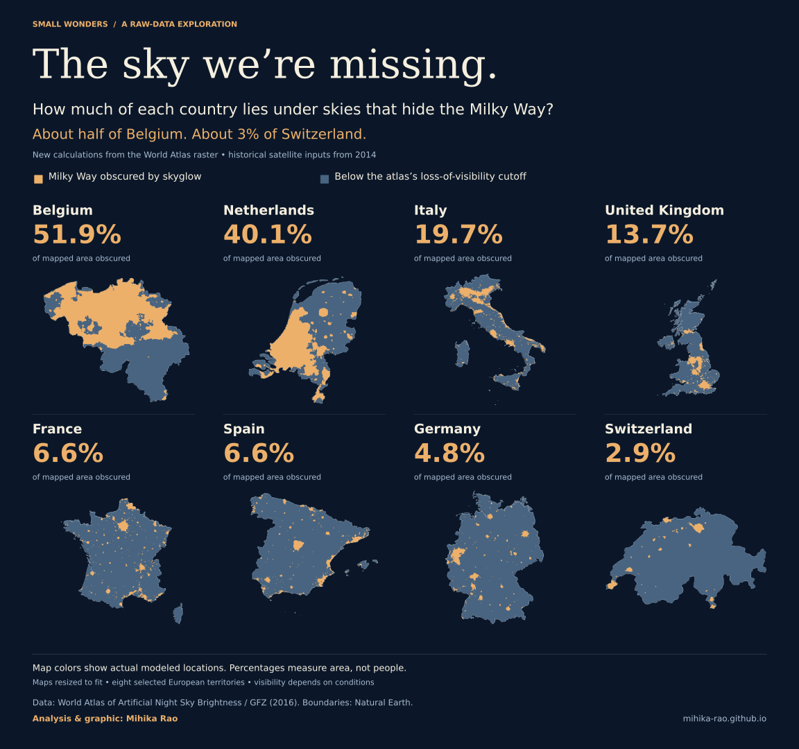

NO. 002 /
Between words
What happens between a correct answer and a useful learning experience? Three working prototypes on Hindi in context, Devanagari decoding, and human review of AI-assisted lessons.
Explore the prototypes ↗ANALYTICS / AN OPEN-ENDED COLLECTION
I had a question.
Then I found some data.
Skies, cities, everyday objects, and things I couldn’t leave alone. A growing collection of visual investigations, with the data and thinking behind each one.
NO. 002 /
What happens between a correct answer and a useful learning experience? Three working prototypes on Hindi in context, Devanagari decoding, and human review of AI-assisted lessons.
Explore the prototypes ↗
NO. 001 /
How much of each country lies under skies that hide the Milky Way? Eight maps, one raw dataset, and a visibility question.
Explore the analysis ↗